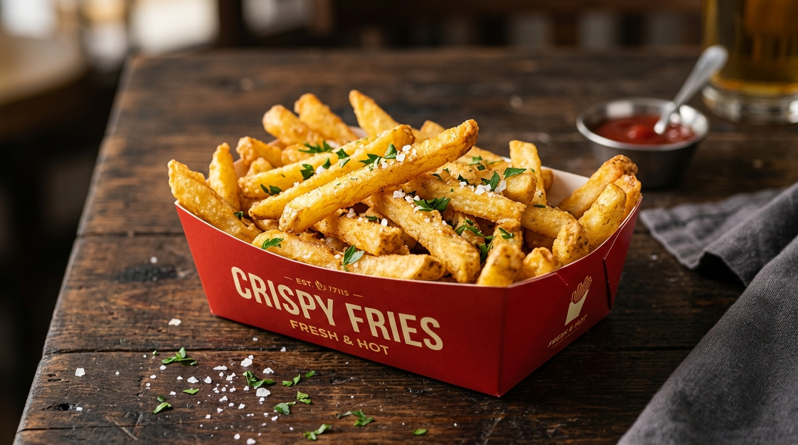
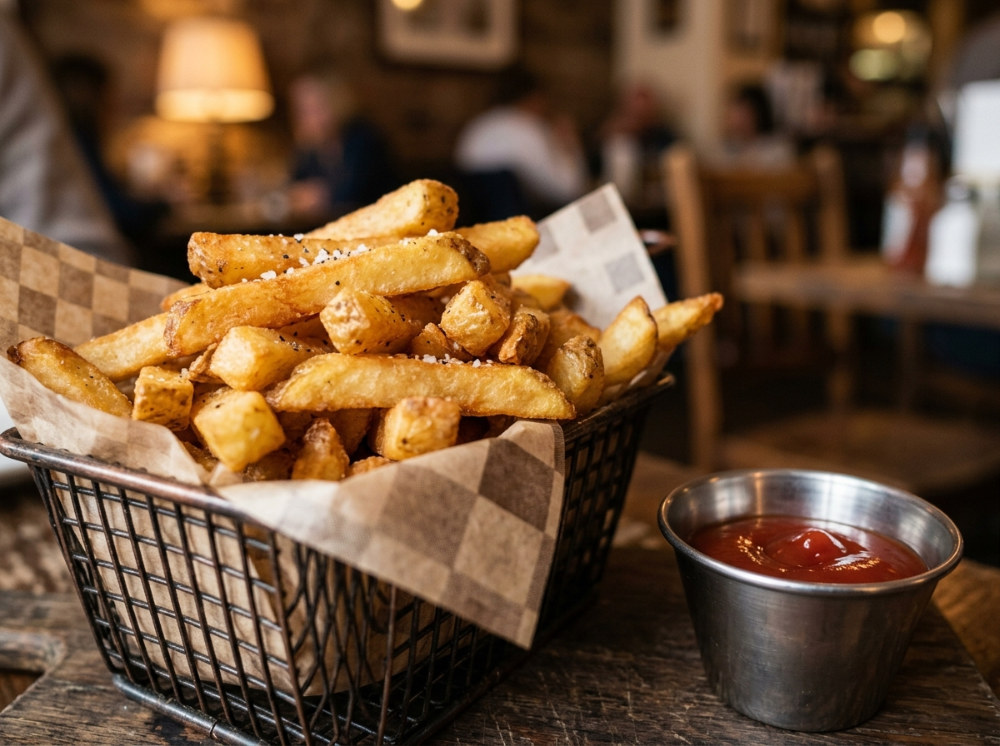
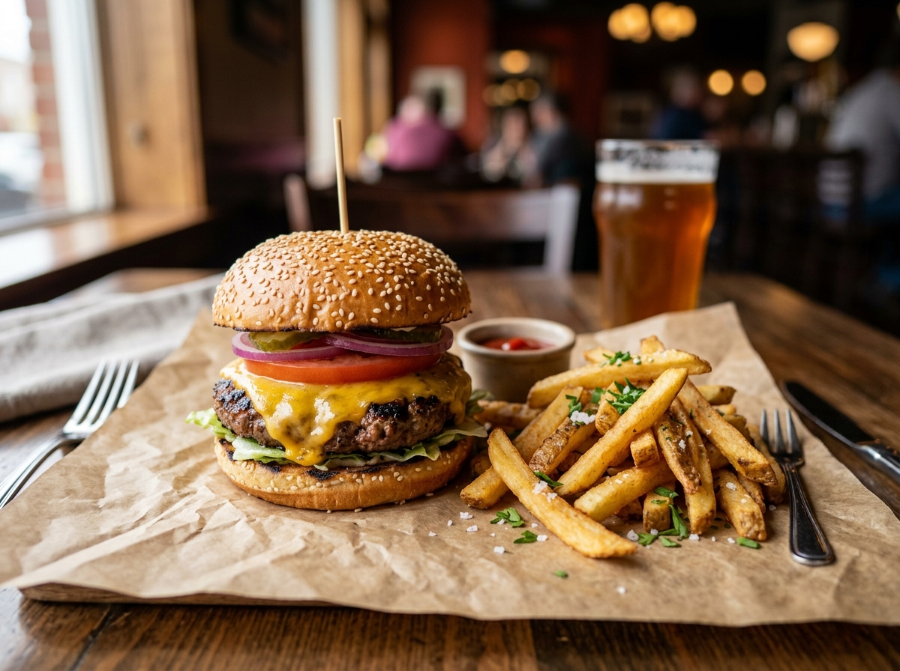
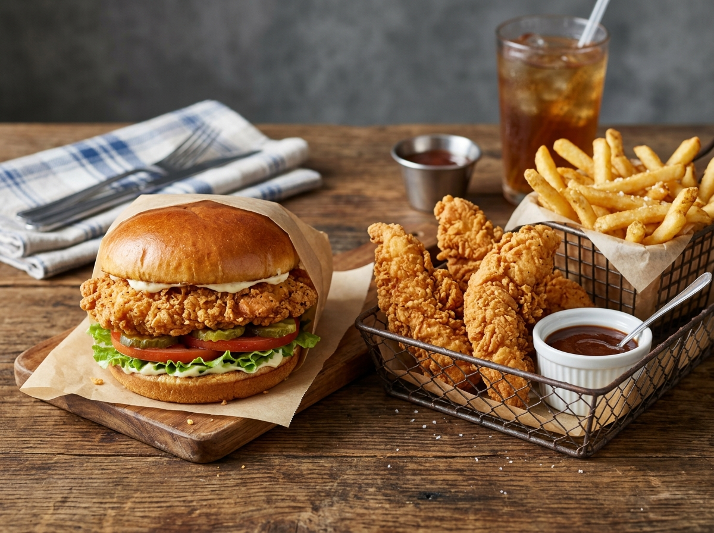
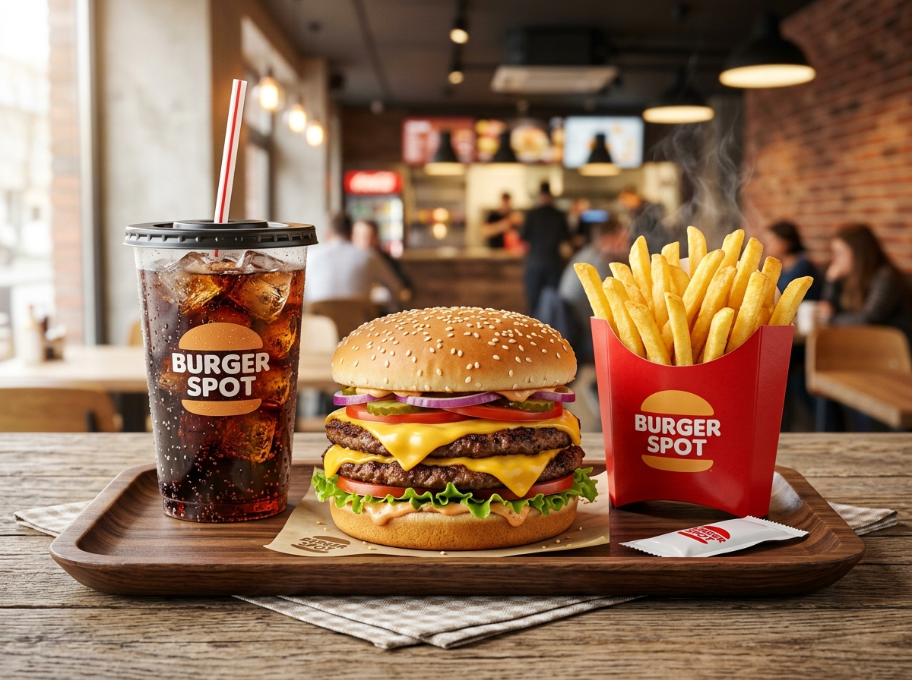

Looking for complete details on these signature sides? Whether you want to know how much are fries at burger king, explore verified french fries burger king nutrition, or check crispy batter ingredients, discover everything you need to know about one of America's favorite fast-food accompaniments.


Unlike traditional thin shoestring sides, burger king fries are engineered with a thicker cut potato profile and a subtle starch batter coating. This distinct cooking method traps moisture inside while creating a durable outer golden shell that stays hot and crispy longer.
Compare portion weights, average prices, and calorie counts for all available menu sizes.
Understanding nutritional density helps you make informed dining choices and balance your daily macros. From lighter small orders to hearty large portions, here is how each serving breaks down.
Looking at daily values, a standard medium order provides 340 calories with wholesome carbohydrates from real potatoes and healthy vegetable oil fats without trans fats or added cholesterol.
Read Ingredients & AllergensSide-by-side breakdown of portion weights, energy values, and key macronutrients across all standard orders.
| Portion Size | Serving Weight | Calories | Total Fat | Carbohydrates | Protein | Sodium |
|---|---|---|---|---|---|---|
| Small Serving | Approx. 74g | 220 kcal | 10g | 30g | 3g | 370mg |
| Medium Serving Most Popular | Approx. 116g | 340 kcal | 15g | 48g | 4g | 570mg |
| Large Serving King Size | Approx. 158g | 430 kcal | 19g | 60g | 5g | 790mg |
Standard Value Side: The bk medium fries calories stand at 340 kcal with 15g of fat, making it the most common accompaniment for signature combo meals.
Macro Density & Large Orders: A comprehensive review of bk large fries nutrition reveals 430 calories, 19g total fat (3g saturated), and 60g carbohydrates. When considering the calories in burger king large fries, it is the most filling side on the standard menu.
Portion Size Comparison: Comparing sizes, large fries burger king calories represent an increase of 90 calories over medium. In total, burger king large fries calories account for roughly 22% of an average 2,000-calorie daily reference intake.
Sharing & Dietary Balance: Because large burger king fries calories reach 430 kcal, sharing an order between two people is a smart strategy to enjoy the hot, crispy texture while keeping meal macros balanced.
A transparent overview of ingredient sourcing, frying standards, and kitchen preparation notices.
The authentic ingredients in burger king french fries combine premium potatoes with a crispy starch batter, fried to order in 100% vegetable oil:
These potato items do not contain direct dairy, eggs, meat products, or gluten in their base recipe. However, cross-contact considerations apply:
Restaurant kitchens utilize shared deep fryers to prepare sides alongside gluten-containing products such as chicken tenders, onion rings, and fish fillets. Individuals with severe celiac disease or wheat/dairy allergies should exercise caution.
What makes this eating experience unique compared to standard fast food sides?
The potato starch batter forms a micro-textured shell that delivers a distinct audible crunch with every bite.
Thick-cut sizing retains internal moisture, yielding a pillowy, hot mashed-potato texture inside.
Natural potato sweetness shines through balanced by fine salt crystals that enhance overall savoriness.
Thicker dimensions allow these spuds to retain high temperatures longer, avoiding sogginess during takeout.
Pair your favorite golden sides with iconic flame-grilled entrees for the ultimate meal experience.

The classic combination pairing smokey flame-broiled beef patty with hot salted thick-cut spuds.

Juicy crispy chicken sandwich or chicken tenders paired with extra crispy potato wedges and dipping sauce.

The full meal deal featuring a double cheeseburger, hot golden side, and an ice-cold refreshing drink.
Get fast, accurate answers to common questions about menu pricing, nutritional facts, and ingredients.
Whether you are tracking nutritional macros, comparing side prices, or deciding on the best meal combo, stay informed with our ultimate food guide.
Explore Menu & Nutrition Guide